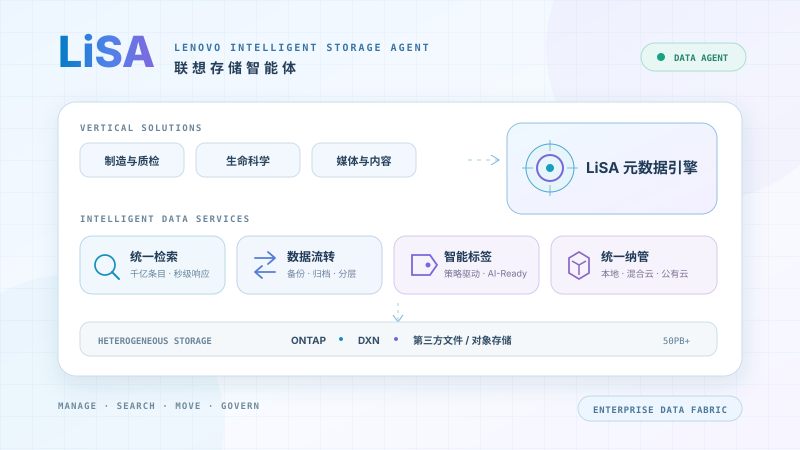

Bay 10规划中
规划中
下一个应用正在准备中。
面向客户的 NetApp 存储技术 & AI 数据管理平台演示

基于 Fusion 历史实测数据，支持精确配置查询、可用容量反查及加密截图查看。
密码登录后进入
交互展示从车间数据、AIDE 编目与检索，到 GPU 推理和产线知识助手的完整数据链路。
进入交互演示
用自然语言完成 ONTAP 卷开通、数据保护与多集群管理，交互展示 AI 到 REST API 的完整调用链路。
进入交互演示
集中展示 Harvest、ONTAP、DataOps 与 Knowledge MCP，让 AI 看懂并管好 NetApp 数据基础设施。
进入交互演示
交互演示双站点 NAS 工作负载的同步复制、故障切换、规模规划与部署适配。
进入技术演示
交互展示异常加密行为的实时检测、快照锁定、告警响应与制造业务恢复路径。
进入交互演示
交互演示长上下文推理的显存压力，以及 KV Cache 在 HBM、DRAM、NVMe 与 AFX 共享存储池之间的分层、命中和回填。
进入交互演示
20 幕交互演示，覆盖 NAS 性能与 QoS、SAN 连接与高可用、S3 语义完备性、业务连续性、纵深安全与 AFX 平台演进。
进入技术演示
以独立元数据引擎统一纳管 ONTAP、DXN 与第三方非结构化数据，实现千亿条目秒级检索、数据流转、智能标签与生命周期治理。
密码登录后进入下一个应用正在准备中。